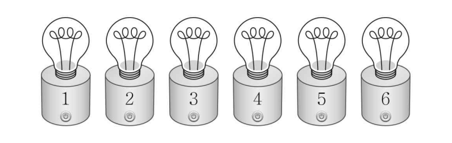

부터 까지의 자연수가 하나씩 적혀 있는 개의 전구가 있다. 이 개의 전구는 모두 꺼져 있고, 각 전구는 전원 버튼을 누를 때마다 켜짐과 꺼짐이 전환된다. 이 개의 전구와 한 개의 주사위를 사용하여 다음 시행을 한다.
주사위를 한 번 던져 나온 눈의 수가 일 때, 이하의 숫자가 적힌 모든 전구의 전원 버튼을 한 번씩 누른다.
이 시행을 번 반복할 때, 나오는 눈의 수를 차례로 , , , , 라 하자. 번째 시행 후 전구가 모두 켜져 있도록 하는 모든 순서쌍 의 개수를 구하시오. [4점]

판단전구마다 몇 번 눌렸는지 따로 따라가면 복잡해. 눈마다 나온 횟수로 바꾸면 전구 를 누른 횟수가 합 하나로 정리돼.
주의눈이 이면 이하의 전구를 누르니까, 전구 는 눈이 이상일 때 눌리는 거야. 방향 거꾸로 잡지 마.
버튼을 한 번 누를 때마다 상태가 바뀌니까, 꺼진 데서 출발하면 홀수 번 눌린 전구만 켜져 있어.
이웃한 전구 둘의 누른 횟수 차가 바로 그 눈의 횟수라서, 둘 다 홀수면 차는 짝수가 되는 거야. 거꾸로 이 홀짝이면 모든 가 홀수라서, 이 홀짝 조건을 세면 딱 맞아.
판단의 값으로 경우를 나누면 빠짐도 겹침도 없어. 각 경우에서 남은 횟수를 짝수끼리 나누면 돼.
같은 눈끼리는 같은 것으로 보고 다섯 자리에 나열하니까 같은 것이 있는 순열이야.
이면 남은 두 번은 짝수 하나로만 채워지니까, 1부터 5 중 같은 눈이 두 번 나와야 해.
주의는 서로 다른 두 눈을 고르는 거라 야. 같은 눈 하나를 네 번 쓰는 경우와 겹치지 않게 따로 세.
(I), (II), (III)은 의 값이 달라서 겹치지 않으니까 그냥 더하면 돼.
에 예의 횟수를 넣은 거야. 시행대로 직접 눌러 봐도 여섯 전구가 다 홀수 번 눌려서 모두 켜지지?